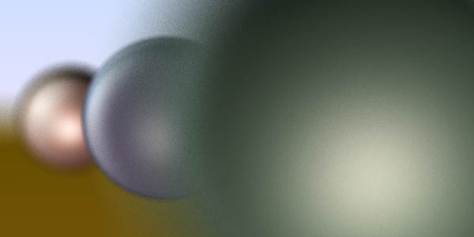

Distributed Ray Tracer w/
Animation
Ryan Geiss & Vince Scheib
[RESULTS]
[OVERVIEW]
[PROJECT LOG]
[TASK
ASSIGNMENTS]
[DETAILED
BREAKDOWN]
[PAPERS REFERENCED &
SUMMARIZED]
[PERSONAL
INFORMATION]
RESULTS
We created
many images and animations showing antialiasing, soft
shadows, soft reflection, soft refraction, depth of field,
and motion blur. Here they are:
A big
animation with over 8000 spheres. This rendered for days
on very large servers, but still only finished 7
oversamples, so it is a bit pixelated. Very nice depth of
field and motion blur. Animation designed by Vince.
View the 5.6MB MPEG
animation.
View the 2.9MB
QuickTime animation.
-
A nice animation showing motion blur & depth of field.
Rendertime was about 4 days on my P133. Each frame has 27
oversamples. Animation designed by Vince.
View the 450KB MPEG animation.
View the 690KB QuickTime animation.
-
Short animation showing a transparent polygonal cup. Nice
refraction & soft shadows. Notice the very faint
shadow from the cup. 30 Oversamples. Animation designed
by Ryan.
View the 51KB MPEG animation.
-
A Huge number of polygons, soft shadows, phong shading,
soft reflections. Just under 50 oversamples. Picture
designed by Ryan.
View the image.
-
Crazy reflections (Mirrored sphere within mirrored sphere).
100 oversamples. Picture designed by Vince.
View the image.
-

<-- View a larger version.
Polygons can be shrunken and enlarged to create
interesting effects. Pictures designed by Ryan.
-
Distributed reflection and refraction. Notice that in the
first picture the left sphere has a blurred reflection
verses the crisp reflection in the right sphere. Pictures
designed by Ryan.
-

Depth of field. Picture by Vince.
-
An early render, (without antialiasing) showing
interesting phong on a polygon object. Soft shadows too.
Picture designed by Ryan.
[TOP]
OVERVIEW
A
distributed ray tracer* with the following features:
-
Motion Blur
- Anti-aliasing
- Depth of Field
- Glossy Reflections
- Keyframed Animation Control
- Polygonal objects
*- A 'distributed
ray tracer' is a ray tracer which oversamples by a linear
factor of n, distributing sampling rays to
obtain a higher quality result.
[TOP]
PROJECT LOG
| 2/18/99 |
Project
initialization.
Tasks determined, goals set, this page generated. |
| 2/21/99 |
Vince
overhauled old ray tracer engine to suit the
design of the distributed ray tracer. (Not
completely done with this yet)
Ryan ported old code for polygonal based objects.
(Not completely done with this yet) |
| 2/22/99 |
Vince
wrangled with incorporating the polygon object
for a while, did some design work on how to set
up data for individual frames. Listened to plenty
of techno. Entered code to distribute the point
lightsource position. |
| 2/23/99 |
Made
sure code is cross platform happy. Phong
rendering of polygons done, WOW that looks
awesome.
Merging
of multiple files built in, automatic reuse of
previous renders makes it snappy fast to preview
and then gradually improve quality without
spending all that re-render time.
Depth
of field & antialiasing done.
|
| 2/24/99 |
Summarized
papers |
| 2/27/99 |
Added
Keyframe top level design, animation for
materials and observer parameters. |
| 2/28/99 |
Blurred
reflections and transparency implemented. Put
together first animation. 'rotation02'.
|
| 3/2/99 |
Started
rendering the Vertigo animation on 8 Sun Ultra
Sparc II processors. |
| 3/7/99 |
Stopped
rendering the Vertigo animation Made a few
other neato images
|
| 3/9/99 |
Gave
presentation |
| 3/10/99 |
Stopped
working on this project. |
[TOP]
TASK ASSIGNMENTS
- Ray
tracer Top Level Design - Vince
- Motion
Blur - Vince
- Anti-aliasing
- Vince
- Soft
Shadows - Vince
- Depth of
Field - Vince
- Blurred
Transparency - Ryan
- Glossy
Reflections - Ryan
- Image
Merging - Ryan
-
Keyframed Animation Control - Vince
-
Polygonal objects - Ryan
[TOP]
DETAILED BREAKDOWN
- Motion
Blur
Objects
have a time parameterized description of movement in
space according to keyframes. Sample rays will be
distributed throughout the time dimension. This
relies solely on being able to retrieve position and
other describing characteristics from the animation
module for any specified time parameter.
- Anti-aliasing
The
sampling ray is perturbed slightly so that samples
from various portions of a pixels extruded volume are
collected.
- Depth of
Field
The
eye position (source of sampling ray) is perturbed
slightly to simulate the distortion of a lens camera.
This will cause blurring of all objects nearer or
farther then the center of interest (focal depth).
- Glossy
Reflections
Specular
reflections are distorted by perturbing the reflected
sampling ray.
-
Keyframed Animation Control
Object
attributes at specified time positions are defined
via a text file, the animation module interpolates
attributes between these key time positions and can
return the proper 'scene' at any specified time value.
-
Polygonal objects
A ray
tracer's most basic object is a sphere, three sided
polygons will also be added to this ray tracer. This
involved reading an input file specifying the
geometry, transforming the location of the geometry,
and calculating intersections with the polygons.
[TOP]
PAPERS REFERENCED & SUMMARIZED
Cook,
Robert L. Thomas Porter, Loren Carpenter. "Distributed
Ray Tracing".
Proceedings of SIGGRAPH'84. In Computer Graphics
18, 3, pp. 137-145, July 1984.
[SUMMARY]
Painter,
James. Kenneth Sloan. "Antialiased Ray Tracing by
Adaptive Progressive Refinement".
Proceedings of SIGGRAPH'89. In Computer Graphics
23, 3, pp. 281-285, July 1989.
[SUMMARY]
[TOP]
PERSONAL INFORMATION
Geiss,
Ryan M.
mailto:geiss.3@osu.edu
http://www.cis.ohio-state.edu/~geiss/
Scheib,
Vincent E.
mailto:sch_REMOVE_THIS_ANTI_SPAM_TEXT_eib@cs.unc.edu
http://www.scheib.net
We
were both third year undergraduate students in Computer
Science Engineering. (Spring 1999)
[TOP]

copyright 1999 Ryan
Geiss & Vince Scheib
|
{kind=link}
{kind=link}
{kind=link}